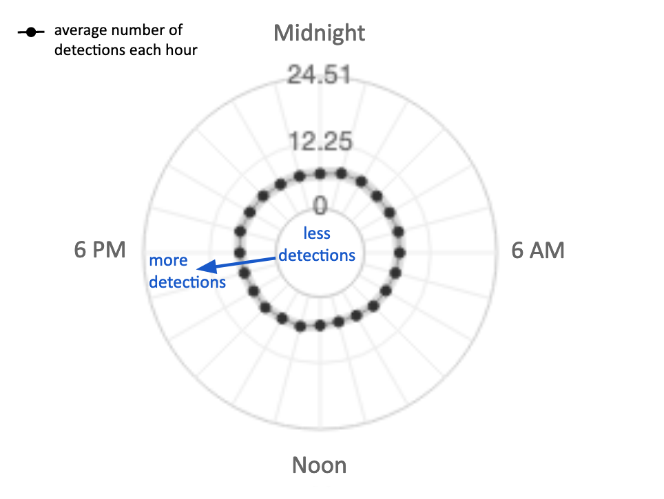

Blue whale calls are close to the lower limits of human hearing. This one was recorded in Monterey Canyon in 2018 inside Monterey Bay sanctuary.
Listen to the same sound clip optimized for human hearing. Many ocean animals can hear and produce sounds that humans cannot, learn more here.
Blue whale calls were detected in Monterey Canyon seasonally (late summer-winter) in Monterey Bay sanctuary, with the most variation around detections (wider gray band) during months with the most detections (October-December).

On average (black line) blue whale calls were evenly detected in Monterey Canyon in Monterey Bay sanctuary at all hours of the day and night.
Learn more about spectrograms.
Blue whales were detected at other stations. View time series and monthly patterns from other locations.
Blue whales were heard in other sanctuaries. Listen to sound clips from other locations.